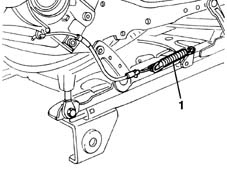
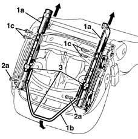
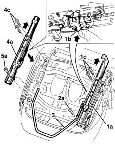

7045A67 (One), SLIDING GUIDE left or right, for front seat - R.R. with seat removed
- Path
- Procedures > 70 FITTINGS > 7045 FRONT SEATS > 7045A front seat assembly > 7045A67 (One), SLIDING GUIDE left or right, for front seat - R.R. with seat removed
- Kind
- repair procedure (removal / refitting; the operation number is the code)
- Applies to
- all engines; all production periods
- Interactive page
- https://sloeber94.github.io/elrnDB-lYpsln/en/#/2429619
Applies to: all engines; all production periods
 Removing
Removing
 Refitting
Refitting1. Only for inner guide Disconnect the end of the memory control cable.

Applies to: all engines; all production periods
1. Move the guides (1a) backwards by operating the slide control lever (1b) until there is access to the rear bolts (1c) fixing the guides.
2. Undo the rear bolts (1c) and the front bolts (2a) fixing the guides.
3. Remove the guides and the slide control lever, then separate them, releasing them from the retainers.

Applies to: all engines; all production periods
Refitting
RemovingCheck that the guides are not damaged.
1. Move the guide (1a) back manually, using the element (1b) until the rear bolts (1c) fixing the guide can be inserted.
2. Screw in the bolts (1c) and (2a) without tightening them.
3. Fit the slide control lever in its seat and attach it to the guide (1a).
4. Move the outer guide (4a) back manually using the element (1b) until the rear bolts (4c) fixing the guide can be inserted.
Position the outer guide (4a) attaching the slide control lever (3).
5. Screw in the bolts (4c) and (5a) without tightening them.
Check that the elements for both guides engage simultaneously.
Tighten the bolts (1a), (2a), (4c), (5a).

Applies to: all engines; all production periods
Move the guides to a suitable position and connect the end of the memory control cable.
Test the guides are working properly. In particular, check the guides are aligned by moving them around to different positions using the control lever and then checking the keys of both guides engage simultaneously.
Check that the slide position memory control is working properly.